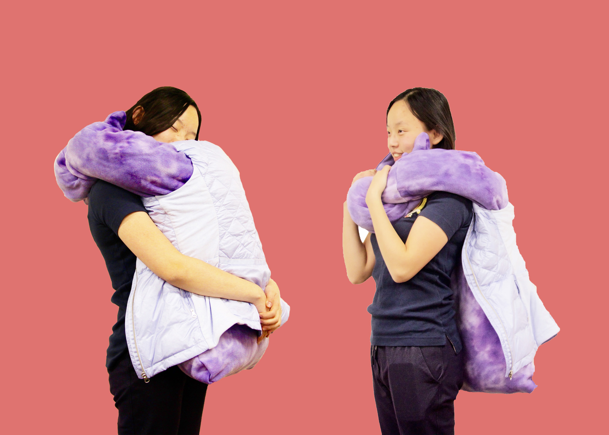
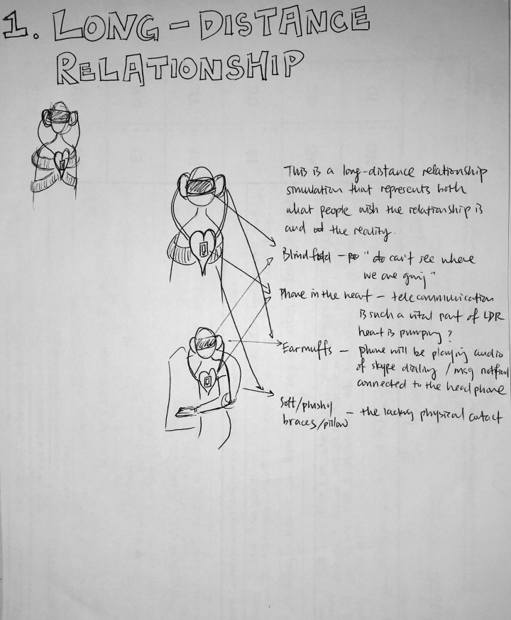
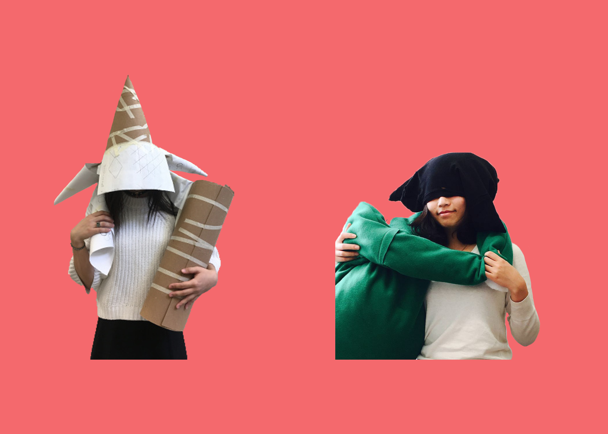
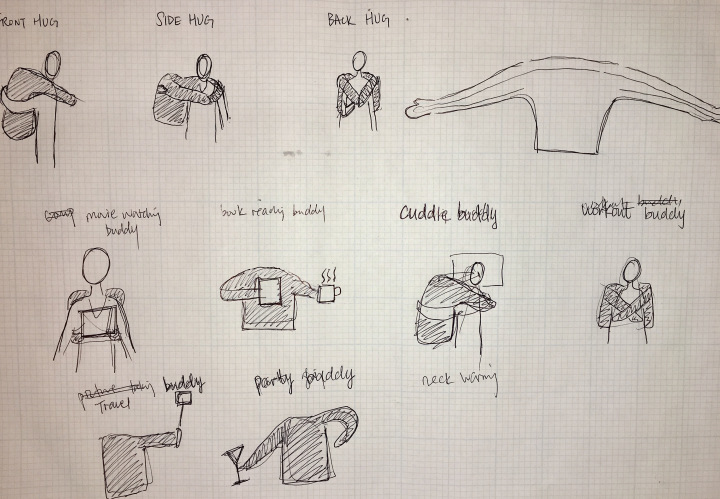
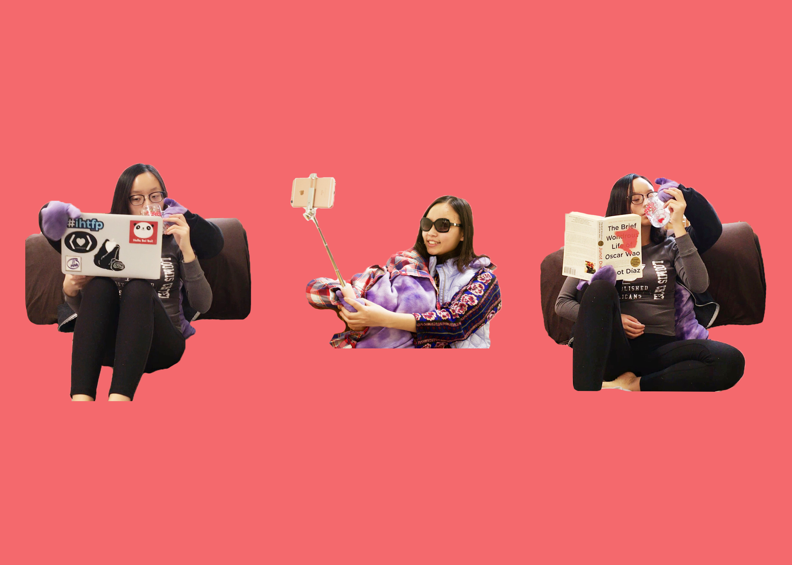

This is a project on wearables for Objects and Interactions taught by Marcelo Coelho and Jessica Rosenkrantz. When I think about wearables, I think about interactions with human body. Compared with geographically close relationships, long distance relationships (LDR) lacks exactly this critical component of physical interactions among partners. Thus, my first thought was to make a LDR Simulator wearable to explore what it means to be in a LDR.
One feedback I received during the first class critique was that the wearable seemed to reflect both the experience in a LDR and the physical interactions people in LDRs wish they have. In my final iteration, I decided to focus on the latter by improving on the pillow through fabric, shape, and functionality. I changed the fabric to a soft fleece, added flexible aluminum wire inside the arms so they can stay around user’s body.
The final product ended up being fairly simple to fabricate; it did not involve any electronics. However, there are so many different ways one could interact with this low-tech plush "partner." People were playing with it in all kinds different ways during the final review, so I thought about making a collection of them in different shapes (so they are no longer restricted to the humanoid shape). Imagine going to a cocktail party where everyone brings a plushy buddy!



